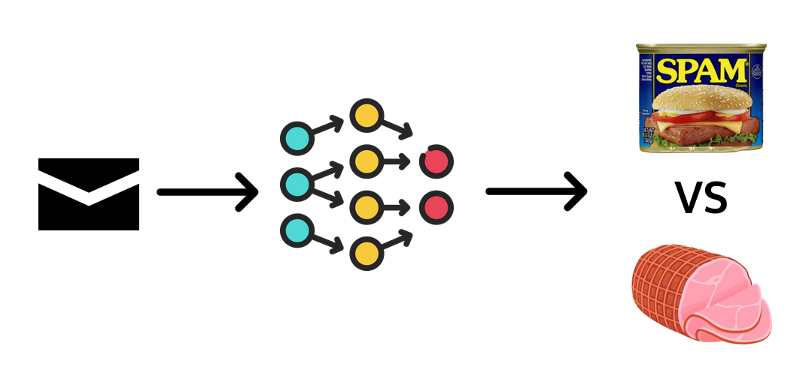
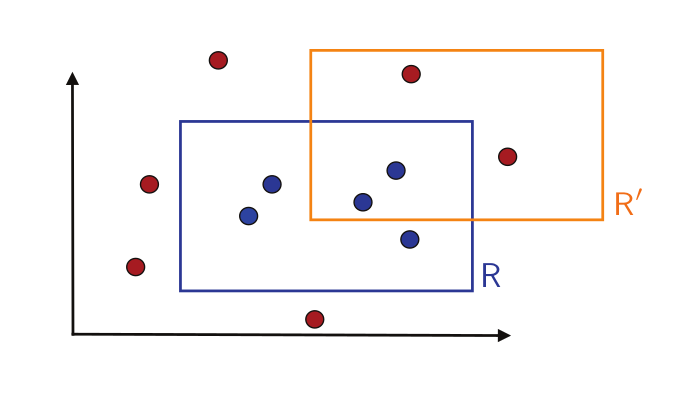
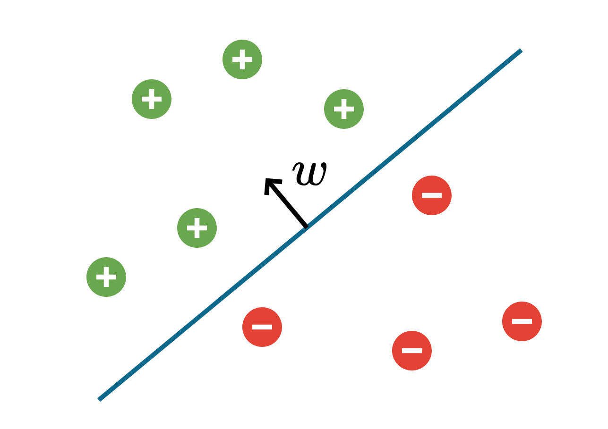

MAC5005 - Fundamentos Matemáticos do Aprendizado Sequencial e Online
IME-USP
2026-02-10
\[ \def\argmin{\operatorname*{argmin}} \def\Regret{\operatorname*{Regret}} \def\PRegret{\operatorname*{P-Regret}} \def\WL{\operatorname*{WL}} % \def\T{\mathsf{T}} \def\prob{\mathbb{P}} \def\expect{\mathbb{E}} \def\ones{\mathbf{1}} \def\eps{\varepsilon} \def\ERM{\mathrm{ERM}} \def\DESC{\mathrm{DESC}} \def\VC{\mathrm{VC}} \def\LDim{\mathrm{LDim}} \def\bR{\mathbb{R}} \def\bN{\mathbb{N}} \def\cC{\mathcal{C}} \def\cD{\mathcal{D}} \def\cH{\mathcal{H}} \def\cB{\mathcal{B}} \def\cX{\mathcal{X}} \def\cY{\mathcal{Y}} \def\cV{\mathcal{V}} \]
Ver rapidamente conceitos clássicos de teoria de ML
PAC-Learning, VC-dimension, online learning, boosting, bandits
Escolha de tópicos muito viesada para meus interesses de pesquisa
Cobrir ferramentas úteis para pesquisa teórica em ML e algoritmos
Concentração, otimização convexa, estimadores não-viesados de gradientes
Achar outras pessoas interessadas nesses assuntos 😄

A partir de exemplos, queremos “aprender” a classificar e-mails de SPAM
Como modelar esse tarefa matematicamente?
Aprendizado Estatístico é um dos mais clássicos arcabouços teóricos de ML.
No Exemplo de Spam:
Queremos achar \(h \colon \cX \to \cY\) que tenha a maior chance de acertar em exemplos novos de \(\cD\): \[ \prob[h(x) \neq y]~\text{mais baixo possível} \quad \text{onde}~(x,y) \sim \cD \]
A chave aqui é a hipótese de que \(S\) é gerado I.I.D.
Realista para detecção de spam?
Distribuição igual para novos exemplos?
A hipótese de dados I.I.D. é muito forte.
Em Online Learning temos o extremo oposto: não assumindo nada sobre os dados.
Os dados podem até mesmo serem adversariais!
No Exemplo de Spam:
Os exemplos chegam para o algoritmo de forma online. Na rodada \(t\), temos:
O que seria um bom algoritmo nesse caso?
Com dados adversariais, o número de erros não é informativo
Veremos que podemos conseguir poucos erros comparado com um ótimo offline restrito
Sem Hipóteses sobre os dados: não assumimos nada sobre a origem dos dados
Menos hipóteses fazem com que tenhamos garantias em diversos cenários
Ferramenta para outras áreas: muito usado como ferramento em TCS, otimização, etc;
Mas tenha em mente: mais hipóteses talvez gerassem resultados mais fortes
Conjunto de atributos \(\cX\) e rótulos \(\cY\)
Hipótese \(h : \cX \to \cY\) (o que queremos aprender)
Função de custo \(\ell : \cY^\cX \times (\cX \times \cY) \to \bR\)
Exemplos
Classificação binária: \(\cY = \{0, 1\}\) e \(\ell(h, (x,y)) = \ones[h(x) \neq y]\)
Usaremos esse cenário durante o resto da aula
Classificação “aleatorizada”: \(\cY = [0,1]\) e \(\ell(h, (x,y)) =\) Entropia Cruzada
Regressão: \(\cY = \bR\)
Umas das hipóteses mais fortes que fazemos em aprendizado estatístico é que os dados de treino
Assumimos que os exemplos de treino \[ S = ((x_1, y_1), \dotsc, (x_m, y_m)) \] são gerados de forma independente e identicamente distribuidos (IID) de uma distribuição \(\cD\) sob \(\cX \times \cY\) desconhecida.
Queremos que \(h : \cX \to \cY\) performe bem em novos dados de \(\cD\)
O erro de generalização ou risco de \(h \colon \cX \to \cY\) é dado por \[ L_{\cD}(h) := \expect[\ell(h, (x,y))] \quad \text{onde}~(x,y) \sim \cD \]
Note que para classificação binária, temos que \[ L_{\cD}(h) = \expect[\ones[h(x)\neq y]] = \prob[h(x) \neq y]. \]

\[ \cX = \bR^2, \quad \cY = \{0,1\} \] \[ \cH = \{x \mapsto \ones[x \in [a,b] \times [c,d]] \colon a,b,c,d \in \bR\} \]

\[ \cX = \bR^d, \quad \cY = \{0,1\} \] \[ \cH = \{x \mapsto \mathrm{sign}(\langle w, x \rangle + \beta) \colon w \in \bR^d, \beta \in \bR\} \]
O algoritmo mais intuitivo é escolher uma hipótese com erro mínimo nos dados de treino
O risco empírico ou erro de treino de \(h \colon \cX \to \cY\) é dado por \[ L_{S}(h) := \frac{1}{m} \sum_{i = 1}^m \ell(h, (x_i,y_i)) \]
Problema Existem funções \(h\) que são claramente ruins
Exemplo: Predizer \(h(x_i) = y_i\) e \(h(x) = 0\) caso contrário
O “No Free Lunch Theorem” também diz que precisamos de mais hipóteses
Solução: Restringir aprendizado à uma classe de hipóteses \(\cH \subseteq \cY^{\cX}\):
\[ \ERM_\cH(S) \in \argmin_{h \in \cH} L_{S}(h) \]
Vamos começar analisando o caso realizável
Diremos que estamos no caso relizável, ou que \(\cH\) realiza \(\cD\), se existir \(h^* \in \cH\) tal que \[ \prob(h^*(x) = y) = 1 \quad \text{onde}~(x,y) \sim \cD \]
Se, além de realizar \(\cD\), a classe \(\cH\) for finita, então ERM “funciona bem”.
No caso realizável, se \(S \sim \cD^m\), então com probabilidade pelo menos \(1 - \delta\) \[ L_{\cD}\big(\ERM_\cH(S)\big) \leq \frac{\log |\cH| + \log\frac{1}{\delta}}{m} \]
Uma classe de hipóteses \(\cH\) é Provavelmente Aproximadamente Correto (PAC) aprendível se existe um algoritmo \(A \colon (\cX \times \cY)^* \to \cH\) tal que
então \[ \prob \big( L_{\cD}(A(S)) \leq \eps \big) > 1 - \delta \]
No caso não realizável, temos que \[ \inf_{h' \in \cH} L_{\cD}(h') \neq 0 ~\quad \text{(e potencialmente grande)} \] Assim, é impossível que para todo \(\eps > 0\) consigamos \(h \in \cH\) com \(L_{\cD}(h) \leq \eps\).
Solução: considerar que conseguimos (PAC-)aprender se achamos \(h\) tal que \[ L_{\cD}(h) - \inf_{h' \in \cH} L_{\cD}(h') \leq \eps \]
Uma classe de hipóteses \(\cH\) é Provavelmente Aproximadamente Correto (PAC) aprendível agnosticamente se existe um algoritmo \(A \colon (\cX \times \cY)^* \to \cH\) tal que
então \[ \prob \big( L_{\cD}(A(S)) - \inf_{h \in \cH} L_{\cD}(h) \leq \eps \big) > 1 - \delta \]
Queremos agora mostrar
\(\cH\) finito \(\implies\) \(\cH\) PAC Aprendível Agnosticamente por ERM
Para isso, vamos mostrar convergência uniforme em \(\cH\): \[ L_{\cD}(h) - L_{S}(h) \leq \text{BLA} \quad \textbf{para todo}~h \in \cH \]
Isso é o suficiente para mostrar que ERM tem risco perto de \(\inf_{h} L_{\cD}(h)\) se \(|\cH| < \infty\):
\[ L_{\cD}(\mathrm{ERM}_S) - L_{\cD}(h^*) \] \[ = L_{\cD}(\mathrm{ERM}_S) - L_{S}(\mathrm{ERM}_S) + L_{S}(\mathrm{ERM}_S) - L_{\cD}(h^*) \]
\[ \leq L_{\cD}(\mathrm{ERM}_S) - L_{S}(\mathrm{ERM}_S) + L_{S}(h^*) - L_{\cD}(h^*) \]
\[ \leq \sup_{h \in \cH} (L_{\cD}(h) - L_{S}(h)) + L_{S}(h^*) - L_{\cD}(h^*) \]
9 A chave da demonstração é mostrar \[ \prob\big(L_{\cD}(h) - L_{S}(h) > \eps \big) \] é pequeno.
Observação chave: \[ L_S(h) = \frac{1}{m}\sum_{i = 1}^m \ones[h(x_i) \neq y_i] \] é uma soma de variáveis aleatórias \(Z_i\) independentes com \(\expect[Z_i] = L_{\cD}(h)\)
Desigualdade de Hoeffding Sejam \(X_1, \dotsc, X_m\) variáveis aleatórias independentes com \(X_i \in [0,1]\) com probabilidade 1, e defina \(\bar X := \frac{1}{m}\sum_{i=1}^m X_i\). Então \[ \prob\left( \bar X - \expect[\bar X] \geq \eps \right) \leq \exp(-2m\eps^2) \\ \prob\left( \bar X - \expect[\bar X] \leq -\eps \right) \leq \exp(-2m\eps^2) \]
Desigualdade de Hoeffding Sejam \(X_1, \dotsc, X_m\) variáveis aleatórias independentes com \(X_i \in [0,1]\) com probabilidade 1, e defina \(\bar X := \frac{1}{m}\sum_{i=1}^m X_i\). Então \[ \prob\left( \bar X - \expect[\bar X] \geq \eps \right) \leq \exp(-2m\eps^2) \\ \prob\left( \bar X - \expect[\bar X] \leq -\eps \right) \leq \exp(-2m\eps^2) \]
Para \(h \in \cH\) fixo, \(S \sim \cD^m\) e \(\eps > 0\) \[ \prob\Big(L_{S}(h) - L_{\cD}(h) \geq \eps\Big) \leq \exp(- 2m \eps^2) \\ \prob\Big(L_{\cD}(h) - L_{S}(h) \geq \eps\Big) \leq \exp(- 2m \eps^2) \]
Seja \(S \sim \cD^m\). Então, com probabilidade pelo menos \(1 - \delta\) \[ L_{\cD}(\ERM_\cH(S)) - \inf_{h \in \cH} L_{\cD}(h) \leq \sqrt{\frac{2(\log(|\cH|+1) + \log\frac{1}{\delta})}{m}} \]